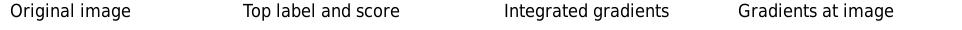
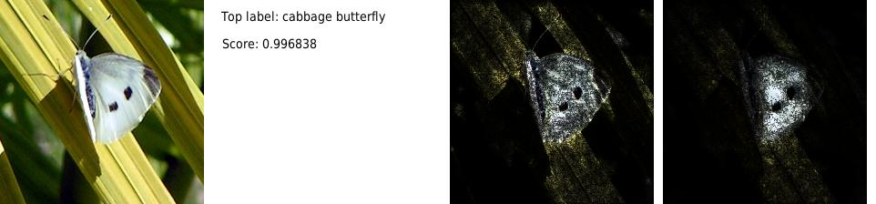

Deep network는 그 특성상 왜 그런 결과가 나왔는지를 설명하기 어렵다. 한 예로, 이미지 분류 문제같은 경우 “왜 이 이미지가 고양이로 분류되었는가?”라는 질문에 답하긴 쉽지 않다. 이러한 문제를 해결하기 위해 각 input이 output에 얼마나 영향을 미쳤는지를 계산하는 attribution method가 여럿 제안되었다.
하지만 이런 attribution technique을 만들때의 힘든점 중 하나는 실험적으로 평가하기가 어렵다는 것이다. 예를 들어, attribution 계산 결과 예상과 꽤 차이나는 결과가 나왔다고 하자. 그렇다면 이는 attribution method에 문제가 있는것인가? 아니면 모델의 잘못된 동작에서 비롯된 error인가? 이는 실험적 결과만 가지고는 쉽게 판단할 수 없는 문제이다.
[2]에선 이러한 문제를 해결하기 위해 axiomatic한 접근방법을 취했다. 즉, attribution method가 가져야할(desirable) 성질들을 정의하고 이를 만족하는 method를 찾아내는 방법을 택한것이다. 저자들은 이러한 성질들을 만족하는 새 attribution method인 integrated gradients를 제안하고 실제로 유용하다는 것을 보여주었다.
저자들은 우선 deep network의 attribution이 무엇인지 정의하였다.
Definition 1. Formally, suppose we have a function \(F: \mathbb{R}^n \rightarrow [0,1]\) that represents a deep network, and an input \(x = (x_1,\ldots,x_n) \in \mathbb{R}^n\). An attribution of the prediction at input \(x\) relative to a baseline input \(x'\) is a vector \(A_F(x, x') = (a_1,\ldots,a_n) \in \mathbb{R}^n\) where \(a_i\) is the contribution of \(x_i\) to the prediction \(F(x)\). (Source: Definition 1 in [2])
이때 정의를 보면 baseline이 필요함을 알 수 있다. 이는 실제 우리가 인과관계를 추론할때를 생각해보면 그 필요성을 알 수 있는데, 인과관계 추론에선 흔히 그 원인(으로 추정되는것)이 있을때와 없을때를 비교해 생각하기 때문이다. Baseline으론 따라서 signal이 없음을 의미하는 값을 쓰는것이 자연스럽다(예를 들어, 이미지 분류 문제에서는 검은색 이미지).
저자들은 attribution method가 만족해야할 두가지 axiom으로 다음을 제시하였다.
Axiom 1. Sensitivity(a): Input과 baseline의 한 feature가 다를때, 두 prediction 또한 다르다면 그 feature의 attribution은 0이 아니다.
이 axiom은 간단히 말해 어떤 feature가 prediction에 영향을 준다면 attribution 또한 0이 아니어야 한다는 말을 하고 있다.
Sensitivity(a)를 만족하지 않는 예로써 gradient를 생각해볼 수 있다. 예를 들어, attribution method로 gradient를 택하고 \(f(x) = 1 - \text{ReLU}(1 - x)\), baseline이 \(x = 0\)인 경우를 보자. 이때, input이 \(x = 2\)라면 함수값은 1로 baseline의 함수값 0과 다르다. 그러나 \(x = 2\)에서의 gradient는 0이므로 attribution이 0이 되어 axiom을 만족하지 않는다. 즉, gradient는 attribution method로 적절하지 않다.
Axiom 2. Implementation Invariance: Attribution method는 functionally equivalent1한 두 network에 대해 같은 attribution 값을 보장해야 한다.
이 axiom은 attribution method가 network의 구현에 상관없이 동작해야 한다는 것을 의미한다. Attribution method가 구현에 의존하게 된다면, 같은 함수를 다른 방식으로 구현한 두 network에 대해 같은 attribution을 보장할 수 없게 된다. 이는 attribution method로는 바람직하지 않은 성질이다.
저자들은 위 axiom에 추가로 유용한 성질들을 제시하였다.
Axiom 3. Completeness: 모든 feature에 대한 attribution의 합은 input \(x\)에 대한 output과 baseline \(x'\)에 대한 output의 차이와 같다. 즉, \[\sum_{i=1}^n \text{Attr}_i(x) = F(x) - F(x')\qquad{(1)}\]
이는 attribution method의 sanity check에 도움을 준다.
Axiom 4. Sensitivity(b): Deep network 로 구현된 함수가 (수학적으로) 어떤 변수에 의존하지 않는다면, 그 변수의 attribution은 0이다.
이는 sensitivity(a)를 보완하는 성격의 axiom으로 sensitivity(a)의 역처럼 생각해볼 수 있다.
Axiom 5. Linearity: 두 네트워크가 각각 두 함수 \(f_1\)과 \(f_2\)로 표현된다 하자. 이때, 그 선형결합으로 표현되는 새 network \(f_3 = \alpha f_1 + \beta f_2\)의 attribution 역시 이와 동일한 계수를 갖는 \(f_1\)과 \(f_2\)의 attribution의 선형결합이다.
[1]의 Theorem 1에 의하면, Implementation Invariance, Sensitivity(b), Linearity, Completeness를 만족하는 attribution method는 path method밖에 없다. 여기서 path method란 path integrated gradients를 기반으로하는 attribution methods를 의미한다. Path integrated gradients는 다음과 같이 정의된다.
Definition 2. Formally, let \(\gamma= (\gamma_1, \ldots, \gamma_n): [0,1] \rightarrow \mathbb{R}^n\) be a smooth function specifying a path in \(\mathbb{R}^n\) from the baseline \(x'\) to the input \(x\), i.e., \(\gamma(0) = x'\) and \(\gamma(1) = x\).
Given a path function \(\gamma\), path integrated gradients are obtained by integrating the gradients along the path \(\gamma(\alpha)\) for \(\alpha \in [0,1]\). Formally, path integrated gradients along the \(i^{th}\) dimension for an input \(x\) is defined as follows. \[\text{PathIntegratedGrads}^{\gamma}_i(x) ::= \int_{\alpha=0}^{1} \tfrac{\partial F(\gamma(\alpha))}{\partial \gamma_i(\alpha) }~\tfrac{\partial \gamma_i(\alpha)}{\partial \alpha} ~d\alpha\qquad{(2)}\] where \(\tfrac{\partial F(x)}{\partial x_i}\) is the gradient2 of \(F\) along the \(i^{th}\) dimension at \(x\). (Source: Equation 2 in [2])
Path integrated gradients는 식에서 알 수 있듯이 \(\tfrac{\partial F(\gamma(\alpha))}{\partial \alpha}\)를 chain rule을 적용하여 각 항별로 나눠 적분한것이다. 즉, \(\alpha\)의 변화에 따라 각 feature가 최종 output의 변화에 얼마나 영향을 주었는지를 적분을 통해 알아본다고 생각할 수 있다.
마지막으로 유용한 성질로 Symmetry-Preserving이란 것이 있다.
Attribution method가 Symmetry-Preserving하다는 것은 input이 모델의 모든 symmetric3 variables에 대해 동일 값을 가지고, baseline 역시 모든 symmetric variables에 대해 모두 동일값을 가질때, 이 symmetric variables에 대한 attribution은 같아야 한다는것을 말한다.
즉, 동일한 role로 작용하는 변수들에 대해 같은 attribution을 가져야 한다는 것이다.
이제 위의 모든 성질을 만족시키는4 attribution method로 저자들은 path method의 straightline case인 integrated gradients를 제안하였다. 즉, integrated gradients는 \(\alpha \in [0,1]\)에 대해 \(\gamma(\alpha) = x' + \alpha \times(x-x')\)인 경우의 path method이다.5
저자는 integrated gradients가 symmetry-preserving 성질을 만족하는 유일한 path method 임을 보였다.
Theorem 1. Integrated gradients는 symmetry-preserving 성질을 만족하는 유일한 path method이다.
 
Integrated gradients는 Riemman approximation을 이용해 쉽게 구현할 수 있다([2]의 Equation 3 참고). 실제 Official github implementation은 trapezoidal rule 역시 적용하여 근사하였다. 구현시 리만 근사의 step으로 \(m\)을 정해야 하는데, 이는 적당한 \(m\)을 넣어보고 attribution값을 \(F(x) - F(x')\)와 비교해보면서 적절한 \(m\)을 찾아내면 된다(Completeness axiom).
Fig. 1은 이미지 분류 모델에 integrated gradients와 gradient를 적용해 비교한 결과이다. Integrated gradients는 실제 어떤 픽셀이 모델의 예측에 영향을 주었는지를 상대적으로 잘 보여주고 있다.
Attribution method가 만족해야할 두 성질 Sensitivity(a), Implementation Invariance를 정의하였다.
그 외 유용한 성질로 Completeness, Sensitivity(b), Linearity, Symmetry-Preserving을 정의하였다.
Path method는 Implementation Invariance, Sensitivity(b), Linearity, Completeness를 만족하는 유일한 method이다.
Integrated gradients는 path method의 straightline case로, 위의 모든 성질을 만족하는 유일한 attribution method이다.
Integrated gradients는 Riemman approximation을 이용해 쉽게 구현할 수 있다. 이때 Completeness를 이용하면 적절한 step size를 찾을 수 있다.